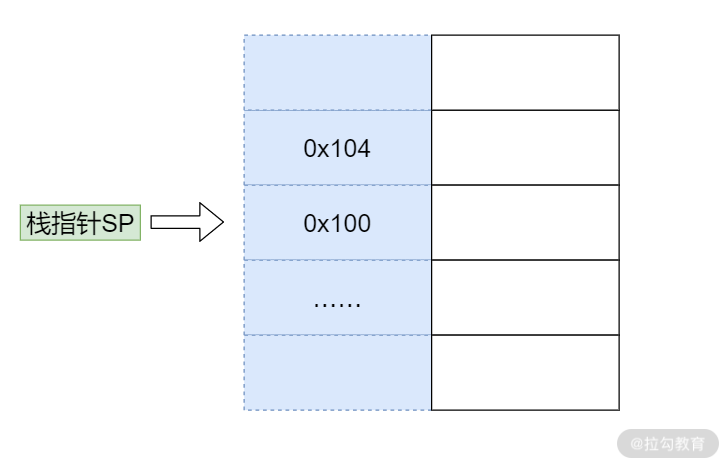
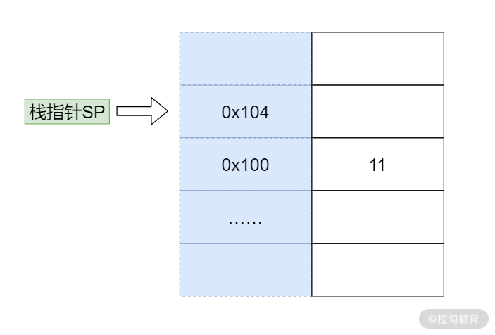
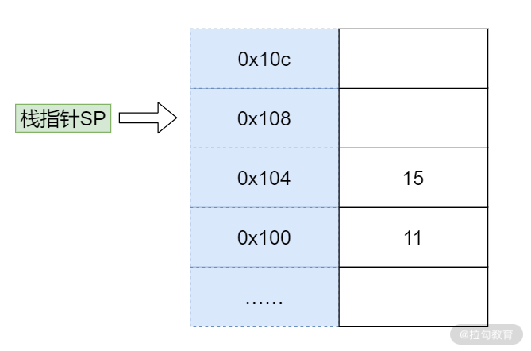
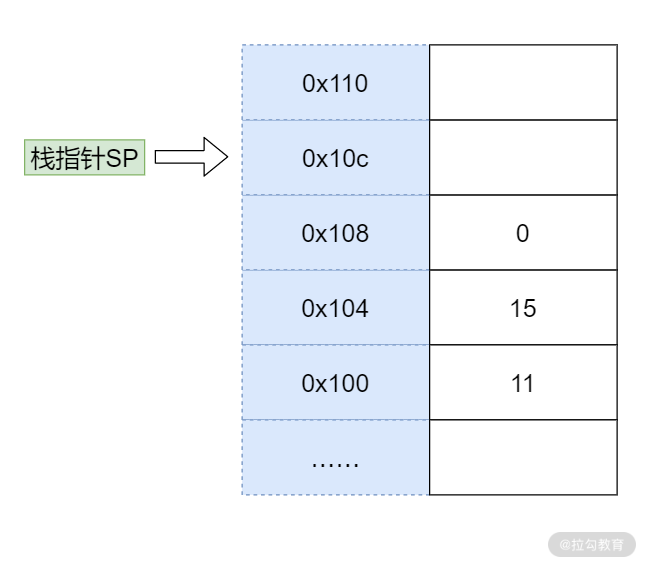
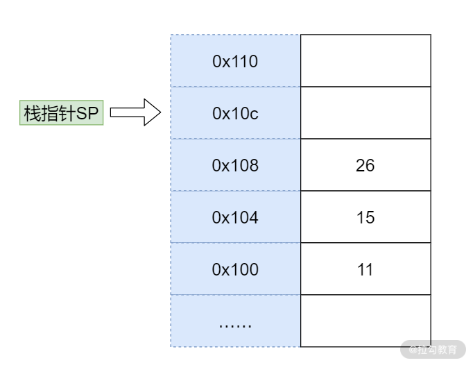
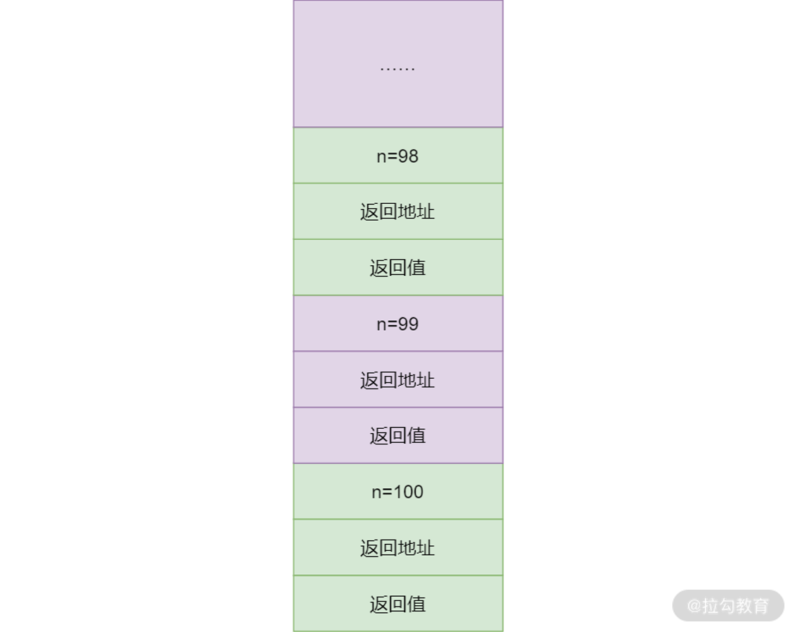
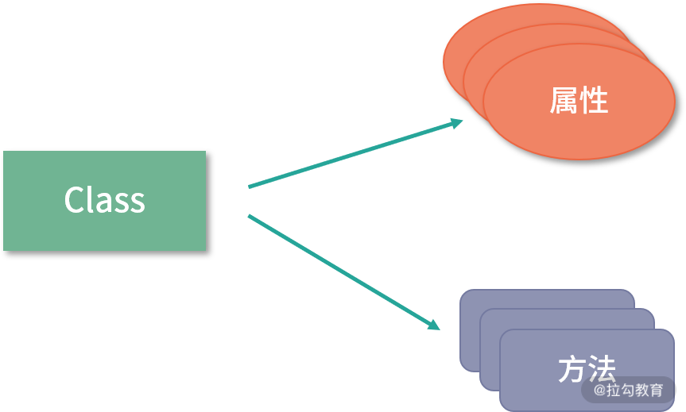

- 00 开篇词 为什么大厂面试必考操作系统？.md.html
- 00 课前必读 构建知识体系，可以这样做！.md.html
- 01 计算机是什么：“如何把程序写好”这个问题是可计算的吗？.md.html
- 02 程序的执行：相比 32 位，64 位的优势是什么？（上）.md.html
- 03 程序的执行：相比 32 位，64 位的优势是什么？（下）.md.html
- 04 构造复杂的程序：将一个递归函数转成非递归函数的通用方法.md.html
- 05 存储器分级：L1 Cache 比内存和 SSD 快多少倍？.md.html
- 05 (1) 加餐 练习题详解（一）.md.html
- 06 目录结构和文件管理指令：rm -rf 指令的作用是？.md.html
- 07 进程、重定向和管道指令：xargs 指令的作用是？.md.html
- 08 用户和权限管理指令： 请简述 Linux 权限划分的原则？.md.html
- 09 Linux 中的网络指令：如何查看一个域名有哪些 NS 记录？.md.html
- 10 软件的安装： 编译安装和包管理器安装有什么优势和劣势？.md.html
- 11 高级技巧之日志分析：利用 Linux 指令分析 Web 日志.md.html
- 12 高级技巧之集群部署：利用 Linux 指令同时在多台机器部署程序.md.html
- 12 (1)加餐 练习题详解（二）.md.html
- 13 操作系统内核：Linux 内核和 Windows 内核有什么区别？.md.html
- 14 用户态和内核态：用户态线程和内核态线程有什么区别？.md.html
- 15 中断和中断向量：Javajs 等语言为什么可以捕获到键盘输入？.md.html
- 16 WinMacUnixLinux 的区别和联系：为什么 Debian 漏洞排名第一还这么多人用？.md.html
- 16 (1)加餐 练习题详解（三）.md.html
- 17 进程和线程：进程的开销比线程大在了哪里？.md.html
- 18 锁、信号量和分布式锁：如何控制同一时间只有 2 个线程运行？.md.html
- 19 乐观锁、区块链：除了上锁还有哪些并发控制方法？.md.html
- 20 线程的调度：线程调度都有哪些方法？.md.html
- 21 哲学家就餐问题：什么情况下会触发饥饿和死锁？.md.html
- 22 进程间通信： 进程间通信都有哪些方法？.md.html
- 23 分析服务的特性：我的服务应该开多少个进程、多少个线程？.md.html
- 23 (1)加餐 练习题详解（四）.md.html
- 24 虚拟内存 ：一个程序最多能使用多少内存？.md.html
- 25 内存管理单元： 什么情况下使用大内存分页？.md.html
- 26 缓存置换算法： LRU 用什么数据结构实现更合理？.md.html
- 27 内存回收上篇：如何解决内存的循环引用问题？.md.html
- 28 内存回收下篇：三色标记-清除算法是怎么回事？.md.html
- 28 (1)加餐 练习题详解（五）.md.html
- 29 Linux 下的各个目录有什么作用？.md.html
- 30 文件系统的底层实现：FAT、NTFS 和 Ext3 有什么区别？.md.html
- 31 数据库文件系统实例：MySQL 中 B 树和 B+ 树有什么区别？.md.html
- 32 HDFS 介绍：分布式文件系统是怎么回事？.md.html
- 32 (1)加餐 练习题详解（六）.md.html
- 33 互联网协议群（TCPIP）：多路复用是怎么回事？.md.html
- 34 UDP 协议：UDP 和 TCP 相比快在哪里？.md.html
- 35 Linux 的 IO 模式：selectpollepoll 有什么区别？.md.html
- 36 公私钥体系和网络安全：什么是中间人攻击？.md.html
- 36 (1)加餐 练习题详解（七）.md.html
- 37 虚拟化技术介绍：VMware 和 Docker 的区别？.md.html
- 38 容器编排技术：如何利用 K8s 和 Docker Swarm 管理微服务？.md.html
- 39 Linux 架构优秀在哪里.md.html
- 40 商业操作系统：电商操作系统是不是一个噱头？.md.html
- 40 (1)加餐 练习题详解（八）.md.html
- 41 结束语 论程序员的发展——信仰、选择和博弈.md.html
04 构造复杂的程序：将一个递归函数转成非递归函数的通用方法
我看到过一道非常不错的面试题：不支持递归的程序语言如何实现递归程序？
之所以说这道题好，是因为：
- 首先，它不是纯粹考概念和死记硬背，求职者在回答问题之前需要进行一定的思考；
- 其次，这道题目可以继续深挖，比如可以让求职者具体写一个程序，就变成了一道编程题；
- 最后，这道题目有实战意义，它背后考察的是求职者的编程功底。
为了弄清楚这道题目，你需要对程序有一个更深层次的认识，不仅仅停留在指令的执行层面，而是要灵活使用指令，去实现更加复杂的功能。
for 循环如何被执行
首先，我们来看 for 循环是如何实现的。
下面是一个求 1 加到 100 的 Java 程序，请你思考如何将它转换为指令：
var i = 1, s = 0;
for(; i <= 100; i++) {
s+=i;
}
指令是简单的，像积木一样，程序是复杂的，像房子一样。我们将简单的事情组合，然后去完成复杂的事情，这就是程序员每天在做的。在这个过程中，你会产生思考，比如如何排列组合，如何搭积木，才能更快更准地完成项目？所以这也是训练思维的一个过程。
经过思考，如果按照顺序执行上面的程序，则需要很多指令，因为 for 循环可以执行 1 次，也可以执行 100W 次，还可以执行无数次。因此，指令的设计者提供了一种 jump 类型的指令，让你可以在程序间跳跃，比如:
loop:
jump loop
这就实现了一个无限循环，程序执行到 jumploop 的时候，就会跳回 loop 标签。
用这种方法，我们可以将 for 循环用底层的指令实现：
# var i = 1, s = 0
# 对应 Java 代码，我们首先将 1 和 0 存储到两个地址
# 这两个地址我们用 $i 和 $s 表示
store #1 -> $i // 将数字 1 存入i的地址
store #0 -> $s // 将数字 0 存入 s 的地址
# 接下来循环要开始了，我们在这里预留一个 loop 标签
# loop 是一个自定义标签，它代表指令的相对位置
# 后续我们可以用 jump 指令跳转回这个位置实现循环
loop: # 循环标签
# for ... i <= 100
# 接下来我们开始实现循环控制
# 我们先首先 i <= 100的比较
# 我们先将变量 i 的地址，也就是 $i 导入寄存器 R0
load $i -> R0
# 然后我们用 cmp 比较指令 R0 和数字 100
cmp R0 #100 // 比较 R0 和数字 100
# 注意指令不会有返回值，它会进行计算，然后改变机器的状态（也就是寄存器）
# 比较后，有几个特殊的寄存器会保存比较结果
# 然后我们用 ja（jump above）, 如果比较结果 R0 比 100 大
# 那么我们就跳转到 end 标签，实现循环的跳出
ja end
nop
# 如果 R0<=100，那么ja end 没有生效，这时我们处理 s+=i
# 首先我们把变量 s 所在地址的数据导入寄存器 R1
load $s -> R1
# 然后我们把寄存器R0和R1加和，把结果存储寄存器 R2
add R0 R1 R2
# 这时，我们把寄存器 R2 的值存入变量 s 所在的地址
store R2 -> $s
# 刚才我们完成了一次循环
# 我们还需要维护变量 i 的自增
# 现在 i 的值在 R0 中，我们首先将整数 1 叠加到 R0 上
add R0 #1 R0
# 再把 R0 的值存入i所在的内存地址
store R0 -> $i
# 这时我们的循环体已经全部执行完成，我们需要调转回上面 loop 标签所在的位置
# 继续循环
jump loop
nop
end:
通过上面的方法，我们成功将 for 循环的程序转换成了指令，然后再将它们编码成二进制，就可以存储到内存中了。
讲到这里，我要强调几个事情：
- jump 指令直接操作 PC 指针，但是很多 CPU 会抢先执行下一条指令，因此通常我们在 jump 后面要跟随一条 nop 指令，让 CPU 空转一个周期，避免 jump 下面的指令被执行。是不是到了微观世界，和你所认识的程序还不太一样？
- 上面我写指令的时候用到了 add/store 这些指令，它们叫作助记符，是帮助你记忆的。整体这段程序，我们就称作汇编程序。
- 因为不同的机器助记符也不一样，所以你不用太关注我用的是什么汇编语言，也不用去记忆这些指令。当你拿到指定芯片的时候，直接去查阅芯片的说明书就可以了。
- 虽然不同 CPU 的指令不一样，但也是有行业标准的。现在使用比较多的是 RISC（精简指令集）和 CISC（复杂指令集）。比如目前Inte 和 AMD 家族主要使用 CISC 指令集，ARM 和 MIPS 等主要使用RISC 指令集。
条件控制程序
条件控制程序有两种典型代表，一种是 if-else ，另一种是 switch-case 。 总体来说， if-else 翻译成指令，是比较简单的，你需要用跳转指令和比较指令处理它的跳转逻辑。
当然，它们的使用场景不同，这块我不展开了。在这里我主要想跟你说说，它们的内部实现是不一样的。if-else 是一个自上向下的执行逻辑， switch-case是一种精确匹配算法。比如你有 1000 个 case，如果用 if-else 你需要一个个比较，最坏情况下需要比较 999 次；而如果用 switch-case ，就不需要一个个比较，通过算法就可以直接定位到对应的case 。
举个具体的例子，比如一个根据数字返回星期的程序。如果用if-else，那么你需要这样做：
if(week == 1) {
return "周一";
} else if(week == 2) {
return "周二";
}
……
如果用 switch-case 的逻辑，你可能会这样计算：
跳转位置=当前PC + 4*(week * 2 - 1)
你不用太关心上面的数学关系，我只是举一个例子告诉你， switch-case 实现更多是依赖数学关系，直接算出 case 所在指令的位置，而不是一行行执行和比较。
函数
了解了循环和条件判断，我们再来看看函数是如何被执行的。函数的执行过程必须深入到底层，也会涉及一种叫作栈的数据结构。
下面是一段 C 程序，传入两个参数，然后返回两个参数的和：
int add(int a, int b){
return a + b;
}
这里我先不说具体的解决方案，希望你可以先自己思考。其实到这里，你已经学了不少知识了。下面我们一起分析一下，一种思考的方向是：
- 通过观察，我们发现函数的参数 a,b 本质是内存中的数据，因此需要给它们分配内存地址。
- 函数返回值也是内存中的数据，也就是返回值也需要分配内存地址。
- 调用函数其实就是跳转到函数体对应的指令所在的位置，因此函数名可以用一个标签，调用时，就用
jump指令跟这个标签。
比如上面函数进行了a+b的运算，我们可以这样构造指令：
# 首先我们定义一个叫作add的标签
add:
# 然后我们将a和b所在地址中的数据都导入寄存器
load $a -> R0
load $b -> R1
# 然后我们将寄存器求和，并将结果回写到返回地址
add R0 R1 R2
store R2 -> $r
当我们需要调用这个函数的时候，我们就构造下面这样的指令：
jump add
细心的同学可能已经发现，这里有 2 个问题还没有解决：
- 参数如何传递给函数？
- 返回值如何传递给调用者？
为了解决这 2 个问题，我们就需要用到前面提到的一个叫作栈的数据结构。栈的英文是 Stack，意思是码放整齐的一堆东西。首先在调用方，我们将参数传递给栈；然后在函数执行过程中，我们从栈中取出参数。
函数执行过程中，先将执行结果写入栈中，然后在返回前把之前压入的参数出栈，调用方再从栈中取出执行结果。
将参数传递给 Stack 的过程，叫作压栈。取出结果的过程，叫作出栈。栈就好像你书桌上的一摞书，压栈就是把参数放到书上面，出栈就是把顶部的书拿下来。
因为栈中的每个数据大小都一样，所以在函数执行的过程中，我们可以通过参数的个数和参数的序号去计算参数在栈中的位置。
接下来我们来看看函数执行的整体过程：假设要计算 11 和 15 的和，我们首先在内存中开辟一块单独的空间，也就是栈。

就如前面所讲，栈的使用方法是不断往上堆数据，所以需要一个栈指针（Stack Pointer， SP）指向栈顶（也就是下一个可以写入的位置）。每次将数据写入栈时，就把数据写到栈指针指向的位置，然后将 SP 的值增加。
为了提高效率，我们通常会用一个特殊的寄存器来存储栈指针，这个寄存器就叫作 Stack Pointer，在大多数芯片中都有这个特殊的寄存器。一开始，SP 指向 0x100 位置，而 0x100 位置还没有数据。
- 压栈参数11
接下来我们开始传参，我们先将 11 压栈，之所以称作压栈（ Push)，就好像我们把数据 11 堆在内存中一样。模拟压栈的过程是下面两条指令：
store #11 -> $SP // 将11存入SP指向的地址0x100
add SP, 4, SP // 栈指针增加4（32位机器）
第一条 store 指令将 SP 寄存器指向的内存地址设置为常数 11。
第二条指令将栈指针自增 4。
这里用美元符号代表将 11 存入的是 SP 寄存器指向的内存地址，这是一次间接寻址。存入后，栈指针不是自增 1 而是自增了 4，因为我在这里给你讲解时，用的是一个 32 位宽的 CPU 。如果是 64 位宽的 CPU，那么栈指针就需要自增 8。
压栈完成后，内存变成下图中所示的样子。11 被写入内存，并且栈指针指向了 0x104 位置。

- 压栈参数15
然后我们用同样的方法将参数 15 压栈。

压栈后，11 和 15 都被放入了对应的内存位置，并且栈指针指向了 0x108。
- 将返回值压栈
接下来，我们将返回值压栈。到这里你可能会问，返回值还没有计算呢，怎么就压栈了？其实这相当于一个占位，后面我们会改写这个地址。

- 调用函数
当我们完成了上面的压栈后，就开始调用函数，一种简单的做法是用 jump 指令直接跳转到函数的标签，比如：
jump add
这个时候，要加和在栈中的数据 11 和 15，我们可以利用 SP 指针寻找数据。11 距离当前 SP 指针差 3 个位置，15 距离 SP 指针差 2 个位置。这种寻址方式是一种复合的寻址方式，是间接 + 偏移量寻址。
我们可以用下面的代码完成将 11 和 15 导入寄存器的过程：
load $(SP - 12) -> R0
load $(SP - 8) -> R1
然后进行加和，将结果存入 R2。
load R0 R1 R2
最后我们可以再次利用数学关系将结果写入返回值所在的位置。
store R2 -> $(SP-4)
上面我们用到了一种间接寻址的方式来进行加和运算，也就是利用 SP 中的地址做加减法操作内存。
经过函数调用的结果如下图所示，运算结果 26 已经被写入了返回值的位置：

- 发现-解决问题
一个好的解决方案，也会面临问题。现在我们就遇到了麻烦：
- 函数计算完成，这时应该跳转回去。可是我们没有记录函数调用前 PC 指针的位置，因此这里需要改进，我们需要存储函数调用前的 PC 指针方便调用后恢复。
- 栈不可以被无限使用，11和 15 作为参数，计算出了结果 26，那么它们就可以清空了。如果用调整栈指针的方式去清空，我们就会先清空 26。此时就会出现顺序问题，因此我们需要调整压栈的顺序。
具体顺序你可以看下图。首先，我们将函数参数和返回值换位，这样在清空数据的时候，就会先清空参数，再清空返回值。
然后我们在调用函数前，还需要将返回地址压栈。这样在函数计算完成前，就能跳转回对应的返回地址。翻译成指令，就是下面这样：
## 压栈返回值
add SP, 4 -> SP
# 计算返回地址
# 我们需要跳转到清理堆栈那行，也就是16行
MOV PC+4*(参数个数*2+1) -> SP
# 压栈参数的程序
……
# 执行函数，计算返回值
call function
# 清理堆栈
add SP, -(参数个数+1)*4， SP
递归函数如何被执行
我们刚刚使用了栈解决了函数的调用问题。但是这个方案究竟合不合理，还需要用更复杂的情况来验证。
如下所示，我们给出一个递归函数，请你判断是否可以用上面的方法执行：
int sum(int n){
if(n == 1) {return 1;}
return n + sum(n-1);
}
递归的时候，我们每次执行函数都形成一个如下所示的栈结构：

比如执行 sum(100)，我们就会形成一个复杂的栈，第一次调用 n = 100，第二次递归调用 n = 99：

它们堆在了一起，就形成了一个很大的栈，简化一下就是这样的一个模型，如下所示：
到这里，递归消耗了更多空间，但是也保证了中间计算的独立性。当递归执行到 100 次的时候，就会执行下面的语句：
if(n == 1) {return 1;}
于是触发第 99 次递归执行：
return 2 + sum(1) // sum(1) = 1
上面程序等价于return 3，接着再触发第 98 次递归的执行，然后是第 97 次，最终触发到第一次函数调用返回结果。
由此可见，栈这种结构同样适合递归的计算。事实上，计算机编程语言就是用这种结构来实现递归函数。
类型（class）如何实现
按照我们之前已经学习到的知识：
- 变量是一个内存地址，所以只需要分配内存就好了；
- 循环控制可以用跳转加判断实现；
- 条件控制也可以用跳转加判断实现，只不过如果是
switch-case还需要一定的数学计算； - 函数调用需要压栈参数、返回值和返回地址。
最后，我们来说说类型是如何实现的，也就是很多语言都支持的 class 如何被翻译成指令。其实 class 实现非常简单，首先一个 class 会分成两个部分，一部分是数据（也称作属性），另一部分是函数（也称作方法）。

class 有一个特殊的方法叫作构造函数，它会为 class 分配内存。构造函数执行的时候，开始扫描类型定义中所有的属性和方法。
- 如果遇到属性，就为属性分配内存地址；
- 如果遇到方法，方法本身需要存到正文段（也就是程序所在的内存区域），再将方法的值设置为方法指令所在的内存地址。
当我们调用一个 class 方法的时候，本质上是执行了一个函数，因此和函数调用是一致的：
- 首先把返回值和返回地址压栈；
- 然后压栈参数；
- 最后执行跳转。
这里有一个小问题，有时候 class 的方法会用到this ，这其实并不复杂，你仔细想想， this指针不就是构造函数创建的一个指向 class 实例的地址吗？那么，有一种简单的实现，就是我们可以把 this 作为函数的第一个参数压栈。这样，类型的函数就可以访问类型的成员了，而类型也就可以翻译成指令了。
总结
下面我们做一个简单的总结：
- 我们写的程序需要翻译成指令才能被执行，在 03 课时中我们提到过，这个翻译工具叫作编译器。
- 平时你编程做的事情，用机器指令也能做，所以从计算能力上来说它们是等价的，最终这种计算能力又和图灵机是等价的。如果一个语言的能力和图灵机等价，我们就说这个语言是图灵完备的语言。现在市面上的绝大多数语言都是图灵完备的语言，但也有一些不是，比如 HTML、正则表达式和 SQL 等。
- 我们通过汇编语言构造高级程序；通过高级程序构造自己的业务逻辑，这些都是工程能力的一种体现。
那么通过这节课的学习，你现在可以来回答本节关联的面试题目：一个程序语言如果不支持递归函数的话，该如何实现递归算法？
老规矩，请你先在脑海里思考问题的答案，并把你的思考写在留言区，然后再来看我接下来的分析。
【解析】 思路如下：
- 我们需要用到一个栈（其实用数组就可以）；
- 我们还需要一个栈指针，支持寄存器的编程语言能够直接用寄存器，而不支持直接用寄存器的编程语言，比如 Java，我们可以用一个变量；
- 然后我们可以实现压栈、出栈的操作，并按照上面学习的函数调用方法操作我们的栈。